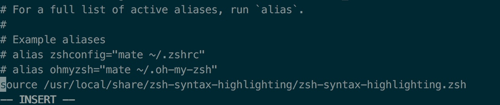
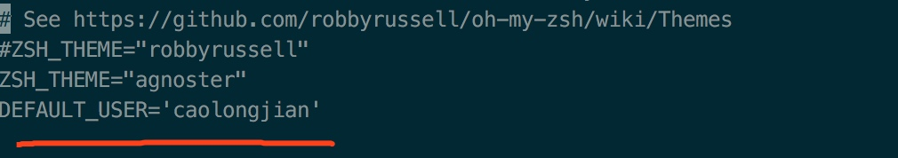
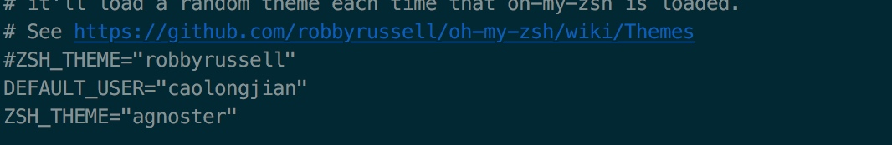
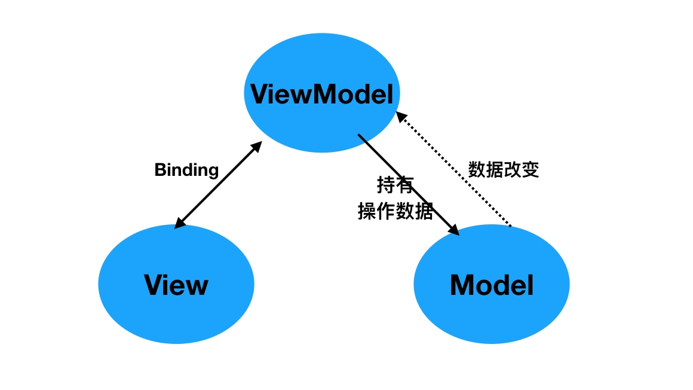

XtraFinder
https://www.trankynam.com/xtrafinder/
在早期的OS X上，只需打开XtraFinderInstaller即可安装XtraFinder。
从OS X 10.11开始，系统完整性保护会阻止代码注入（以及其他许多事情）。
XtraFinder的工作原理是将其代码注入Finder应用程序进程。
为了安装XtraFinder，您需要禁用系统完整性保护。
XtraFinder安装完成后，您可以重新启用系统完整性保护。
有关系统完整性保护的更多信息，请访问此页http://www.trankynam.com/xtrafinder/sip.html
1、第一次安装XtraFinder的步骤
1.禁用系统完整性保护。
2.打开XtraFinderInstaller安装XtraFinder。
3.重新启用系统完整性保护。
2、更新XtraFinder
您不需要重复安装过程。
只需将XtraFinder复制到/ Applications目录即可。
3、无需打开XtraFinderInstaller即可手动安装
1.将Extra目录中的XtraFinderInjector.osax复制到/System/Library/ScriptingAdditions
2.将XtraFinder复制到/Applications
4、禁用系统完整性保护的步骤
1.通过重新启动计算机并在启动时按住Command和R键启动到恢复操作系统。
2.从 Utilities 菜单启动 Terminal。
3.输入以下命令：csrutil disable
4.重新启动电脑。
5、将系统完整性保护恢复到原始状态：
启动到恢复操作系统并输入以下命令：csrutil clear
XtraFinder 系统完整性保护(SIP)
1、关于OS X 10.11中的系统完整性保护
苹果的文章。
系统完整性保护阻止代码注入（以及其他许多事情）。
XtraFinder的工作原理是将其代码注入Finder应用程序进程。
2、如何让XtraFinder在OS X 10.11中工作
您需要部分禁用系统完整性保护。
我不鼓励您禁用系统完整性保护。它会让你的电脑不安全。
3、如何部分禁用系统完整性保护
参考这篇苹果的文章。
按着这些次序：
1. 通过重新启动计算机并在启动时按住Command+R键启动到恢复操作系统。
2. 从 Utilities 菜单启动 Terminal。
3. 输入以下命令：csrutil enable --without debug
4. 重新启动您的计算机。
4、“csrutil enable --without debug” 命令的作用是什么？
它允许代码注入。这意味着XtraFinder可以将其代码注入Finder应用程序进程。
5、如何将系统完整性保护恢复到原始状态
启动到恢复操作系统并输入以下命令：csrutil clear
Go2Shell and AppleScript
给Finder加上一个打开当前路径的终端的功能
有两种实现：
Go2Shell App 和 AppleScript扩展：
AppleScript 实现 Go2Shell 一样的可视化打开方式
一、 Go2Shell
1. 安装
1、Go2Shell官方安装 （推荐，因为AppStore下载的版本太低，无法打开iTerm2 -坑-）
http://zipzapmac.com/Go2Shell

至此就可以打开shell，不过仅仅是打开系统默认的终端shell
2. 进入 Preferences 的方式
open -a Go2Shell --args config

iTerm2 不能打开当前文件所在目录（）
3. 官网下载效果图(多了个 >_< 能直接打开配置)

二、配置 Automator 方法
1. 新建 Automator 服务
打开Automator，选择新建，选择服务
2. 设置 Automator 服务
1、 服务接受设为没有输入，位置设为Finder(访达)

2、 从左侧的资源库中找出 运行 AppleScript，拖到右侧，然后保存为Open iTerm Here

复制以下代码
代码意思是将当前最前面的Finder地址如果获取不到，则返回桌面地址然后通知iTerm的第一个窗口新建标签并跳到这个目录去
on run {input, parameters}
tell application "Finder"
set pathList to (quoted form of POSIX path of (folder of the front window as alias))
set command to "clear; cd " & pathList
end tell
tell application "System Events"
-- some versions might identify as "iTerm2" instead of "iTerm"
set isRunning to (exists (processes where name is "iTerm")) or (exists (processes where name is "iTerm2"))
end tell
tell application "iTerm"
activate
set hasNoWindows to ((count of windows) is 0)
if isRunning and hasNoWindows then
create window with default profile
end if
select first window
tell the first window
if isRunning and hasNoWindows is false then
create tab with default profile
end if
tell current session to write text command
end tell
end tell
end run
3、点击运行就能在 iTerm2 中打开当前目录

4、 设置快捷键
打开系统设置，再去键盘设置里改一下快捷键，然后就可以快速在Finder中通过iTerm打开当前目录了

三、扩展
Automator 创建应用
使用的 Automator AppleScript 时候就在想为什么使用创建的服务，好吧，换个思路创建个应用，尝试着以Go2Shell的方式按住command键拖到文件夹上，结果和Go2Shell实现的效果一样OK，对 Automator 的使用充满期望~~

iTerm2
强大的 Mac OS 终端利器，跟着教程走了一遍。
1. 安装 iTerm2
下载地址：https://www.iterm2.com/downloads.html
下载的是压缩文件，解压后是执行程序文件，你可以直接双击，或者直接将它拖到 Applications 目录下。
或者你可以直接使用 Homebrew 进行安装：
$ brew cask install iterm2
2. 配置 iTerm2 主题
iTerm2 最常用的主题是 Solarized Dark theme，下载地址：http://ethanschoonover.com/solarized
下载的是压缩文件，你先解压一下，然后打开 iTerm2，按Command + ,键，打开 Preferences 配置界面，然后 Profiles -> Colors -> Color Presets -> Import，选择刚才解压的solarized->iterm2-colors-solarized->Solarized Dark.itermcolors文件，导入成功，最后选择 Solarized Dark 主题，就可以了。

3. 配置 Oh My Zsh
Oh My Zsh 是对主题的进一步扩展，地址：https://github.com/robbyrussell/oh-my-zsh
一键安装：
$ sh -c "$(curl -fsSL https://raw.github.com/robbyrussell/oh-my-zsh/master/tools/install.sh)"
安装好之后，需要把 Zsh 设置为当前用户的默认 Shell（这样新建标签的时候才会使用 Zsh）：
$ chsh -s /bin/zsh
然后，我们编辑vim ~/.zshrc文件，将主题配置修改为ZSH_THEME="agnoster"。

agnoster是比较常用的 zsh 主题之一，你可以挑选你喜欢的主题，zsh 主题列表：https://github.com/robbyrussell/oh-my-zsh/wiki/themes
4. 配置 Meslo 字体
使用上面的主题，需要 Meslo 字体支持，要不然会出现乱码的情况，字体下载地址：Meslo LG M Regular for Powerline.ttf
下载好之后，直接在 Mac OS 中安装即可。
然后打开 iTerm2，按Command + ,键，打开 Preferences 配置界面，然后Profiles -> Text -> Font -> Chanage Font，选择 Meslo LG M Regular for Powerline 字体。

效果：

5. 声明高亮
特殊命令和错误命令，会有高亮显示。
使用 Homebrew 安装：
$ brew install zsh-syntax-highlighting
安装成功之后，编辑vim ~/.zshrc文件，在最后一行增加下面配置：
source /usr/local/share/zsh-syntax-highlighting/zsh-syntax-highlighting.zsh

特殊命令和错误命令，会有高亮显示效果：

6. 自动建议填充
这个功能是非常实用的，可以方便我们快速的敲命令。
配置步骤，先克隆zsh-autosuggestions项目，到指定目录：
$ git clone https://github.com/zsh-users/zsh-autosuggestions ~/.oh-my-zsh/custom/plugins/zsh-autosuggestions
然后编辑vim ~/.zshrc文件，找到plugins配置，增加zsh-autosuggestions插件。

注：上面声明高亮，如果配置不生效的话，在plugins配置，再增加zsh-syntax-highlighting插件试试。
有时候因为自动填充的颜色和背景颜色很相似，以至于自动填充没有效果，我们可以手动更改下自动填充的颜色配置
7. 左右键跳转
主要是按住option + → or ←键，在命令的开始和结尾跳转切换，原本是不生效的，需要手动开启下。
打开 iTerm2，按Command + ,键，打开 Preferences 配置界面，然后Profiles → Keys → Load Preset... → Natural Text Editing，就可以了。
8. iTerm2 快速隐藏和显示
这个功能也非常使用，就是通过快捷键，可以快速的隐藏和打开 iTerm2，示例配置（Commond + .）：

9. iTerm2 隐藏用户名和主机名
有时候我们的用户名和主机名太长，比如我的caolongjian@caolongjiandeMacBook-Pro，终端显示的时候会很不好看（上面图片中可以看到），我们可以手动去除。
编辑vim ~/.zshrc文件，增加DEFAULT_USER='caolongjian'配置，示例：

注意： 使用单引号 或者 DEFAULT_USER 放在 ZSH_THEME上面 否则 DEFAULT_USER 不生效

效果：

10. iTerm2 配置代理
编辑~ vim ~/.zshrc，增加下面配置（使用的 shadowsocks）：
# proxy list
alias proxy='export all_proxy=socks5://127.0.0.1:1086'
alias unproxy='unset all_proxy'
iTerm2 需要新建标签页，才有效果：
$ proxy
$ curl ip.cn
当前 IP：185.225.14.5 来自：美国
$ unproxy
$ curl ip.cn
当前 IP：115.236.186.130 来自：浙江省杭州市 电信
11. iTerm2 快捷命令
| 命令 | 说明 |
|---|---|
| command + t | 新建标签 |
| command + w | 关闭标签 |
| command + 数字 command + 左右方向键 | 切换标签 |
| command + | enter 切换全屏 |
| command + f | 查找 |
| command + d | 垂直分屏 |
| command + shift + d | 水平分屏 |
| command + option + | 方向键 |
| command + [ 或 command + ] | 切换屏幕 |
| command + ; | 查看历史命令 |
| command + shift + h | 查看剪贴板历史 |
| ctrl + u | 清除当前行 |
| ctrl + l | 清屏 |
| ctrl + a | 到行首 |
| ctrl + e | 到行尾 |
| ctrl + f/b | 前进后退 |
| ctrl + p | 上一条命令 |
| ctrl + r | 搜索命令历史 |
参考
Block用法和实现原理
Block 概念
闭包 = 一个函数「或指向函数的指针」+ 该函数执行的外部的上下文变量「也就是自由变量」；
Block 是 Objective-C 对于闭包的实现。其中，Block：
- 可以嵌套定义，定义 Block 方法和定义函数方法相似
- Block 可以定义在方法内部或外部
- 只有调用 Block 时候，才会执行其{}体内的代码
- 本质是对象，使代码高聚合
Block 格式
1. Block的定义格式
返回值类型 (^block变量名)(形参列表) = ^(形参列表) {
};

2. Block表达式语法(等号后是表达式语法)
^ 返回值类型 (参数列表) {表达式}
^ int (int count) {
return count + 1;
};
其中，可省略部分有：返回类型(上图为省略返回类型)
^ (int count) {
return count + 1;
};
参数列表为空，则可省略，例：
^ {
NSLog(@"No Parameter");
};
即表达式最简模式语法为：
^ {表达式}
3. Block使用
1、 无参数，无返回值，声明和定义
void(^MyBlockOne)(void) = ^(void){
NSLog(@"无参数，无返回值");
};
MyBlockOne();//block的调用
2、有参数无返回值
void(^MyblockTwo)(int a) = ^(int a){
NSLog(@"@ = %d我就是block，有参数，无返回值",a);
};
MyblockTwo(100);
3、有参数有返回值
int(^MyBlockThree)(int, int) = ^(int a, int b){
NSLog(@"%d我就是block，有参数，有返回值",a + b);
returna + b;
};
MyBlockThree(12,56);
4、有参数有返回值
int(^MyblockFour)(void) = ^{
NSLog(@"无参数，有返回值");
return45;
};
MyblockFour();
5、实际开发中常用typedef 定义Block
//用typedef定义一个block：
typedef int (^MyBlock)(int, int);
//定义类的属性
@property (nonatomic, copy) MyBlock myBlockOne;
//使用
self.myBlockOne = ^int (int ,int){
//...
}
4. Block与外界变量
全局块(_NSConcreteGlobalBlock)
栈块(_NSConcreteStackBlock)
堆块(_NSConcreteMallocBlock) （ARC下引入外界变量）
不使用 __block
1、 创建 .c 文件
```
int main(){
int a = 10;
void (^block)(void) = ^{
printf("%d",a);
printf("test block\n");
};
block();
return 0;
}
```
2、编译
$ gcc testBlock.c
生成可执行文件 a.out
3、执行
$./a.out testBlock.c
- 使用clang 生成 c++ 文件
$ clang -rewrite-objc testBlock.c
c++ 文件 内容
static void __main_block_func_0(struct __main_block_impl_0 *__cself) {
int a = __cself->a; // bound by copy
// 生成一个新的值
printf("%d",a);
printf("test block\n");
}
//......
int main(){
int a = 10;
void (*block)(void) = ((void (*)())&__main_block_impl_0((void *)__main_block_func_0, &__main_block_desc_0_DATA, a));
((void (*)(__block_impl *))((__block_impl *)block)->FuncPtr)((__block_impl *)block);
return 0;
}
使用 __block
int main(){
__block int a = 10;
void (^block)(void) = ^{
printf("%d",a);
printf("test block\n");
};
block();
return 0;
}
步骤同上，生成 c++ 文件
static void __main_block_func_0(struct __main_block_impl_0 *__cself) {
__Block_byref_a_0 *a = __cself->a; // bound by ref
// 指针
printf("%d",(a->__forwarding->a));
printf("test block\n");
}
//......
int main(){
//声明的变量由栈 copy 到堆，并将指针传递给block
__attribute__((__blocks__(byref))) __Block_byref_a_0 a = {(void*)0,(__Block_byref_a_0 *)&a, 0, sizeof(__Block_byref_a_0), 10};
void (*block)(void) = ((void (*)())&__main_block_impl_0((void *)__main_block_func_0, &__main_block_desc_0_DATA, (__Block_byref_a_0 *)&a, 570425344));
((void (*)(__block_impl *))((__block_impl *)block)->FuncPtr)((__block_impl *)block);
return 0;
}
文章目录
架构模式 MVC MVP MVVM
架构模式，也叫架构风格，一个架构模式描述软件系统里的基本的结构组织或纲要。架构模式提供一些呈先定义好的子系统，指定它们的责任，并给出把它们组织在一起的法则和指南。一个架构模式常常可以分解成很多个设计模式的联合使用。MVC模式就属于架构模式。
本文就 iOS 中使用 MVC、MVP、MVVM 架构模式表述个人见解。详细使用方法请参见 GitHub Demo
MVC
MVC 作为iOS开发中较为原始基本的架构模式，它把软件系统分为三个基本的部分：模型Model、视图View以及控制器Controller。这种模式的目的是为了实现一种动态的程序设计，简化后续对软件系统的修改和扩展，并使得程序的某一部分的复用成为可能。在此不做过多的解释，附图一张：
MVP
MVP 架构模式是 MVC 的一个变种，本人认为 MVC 与 MVP 两者之间最大的区别就是 MVP 中使用Presenter 对 View 和 Model 进行了解耦，View 中不会直接持有 Model 数据，之间的值传递都通过 Presenter 进行传递，换言之，Presenter 持有 View 和 Model，在其内部进行逻辑处理，并将处理后的结果直接传递给 View 显示。

- 当视图接收到来自用户的事件时，会将事件转交给 Presenter 进行处理
- 视图向外界暴露接口，当需要更新视图时， Presenter 通过视图暴露的接口更新视图的内容
- Presenter 持有模型并负责对模型进行操作和更新，在需要时取出其中存储的信息
- 当模型层改变时，可以将改变的信息发送给 Presenter
MVVM
MVVM有助于将图形用户界面的开发与业务逻辑或后端逻辑（数据模型）的开发分离开来。
使用 MVVM 架构模式开发的关键点在于 ViewModel 和 View 的双向绑定机制，View 的变动，自动反映在 ViewModel，反之，ViewModel 的改变能够通知到 View。

Demo 中采用绑定关系为，view 的改变通过调用 ViewModel 暴露的方法进行修改；ViewModel 的改变通过 KVO 监听来将变化的值传递给 View 进行展示。
OpenGL ES - - GLKit（GLKBaseEffect）
Speed up OpenGL ES or OpenGL app development. Use math libraries, background texture loading, pre-created shader effects, and a standard view and view controller to implement your rendering loop.
加快OpenGL ES或OpenGL应用程序开发。 使用数学库，背景纹理加载，预先创建的着色器效果以及标准视图和视图控制器来实现渲染循环。

以一个简单的案例来使用 GLKBaseEffect
GLKBaseEffect is designed to simplify visual effects common to many OpenGL applications today.
GLKBaseEffect旨在简化当今许多OpenGL应用程序常见的视觉效果。GLKBaseEffect is program based and, with the binding of its underlying GLSL program
GLKBaseEffect是基于程序的，并且通过其基础GLSL程序的绑定GLKBaseEffect requires at least an OpenGL Core Profile. An appropriate context must be created and made current prior to instantiating and initializing GLKBaseEffect objects.
使用GLKBaseEffect的规范步骤是
(1) 分配并初始化GLKBaseEffect的一个实例
directionalLightEffect = [[GLKBaseEffect alloc] init];(2) 在效果上设置所需的属性
// Configure light0 directionalLightEffect.light0.position = lightPosition; directionalLightEffect.light0.diffuseColor = diffuseColor; directionalLightEffect.light0.ambientColor = ambientColor; // Configure material directionalLightEffect.material.diffuseColor = materialDiffuseColor; directionalLightEffect.material.ambientColor = materialAmbientColor; directionalLightEffect.material.specularColor = materialSpecularColor; directionalLightEffect.material.shininess = 10.0;(3) 优选用顶点数组对象初始化顶点属性/顶点数组状态为要绘制的模型或场景
glGenVertexArraysOES(1, &vaoName); glBindVertexArrayOES(vaoName); // 为每个顶点属性创建并初始化VBO // 下面的例子展示了一个设置位置顶点属性的例子. // 为每个额外的所需属性重复以下步骤：normal，color，texCoord0，texCoord1. glGenBuffers(1, &positionVBO); glBindBuffer(GL_ARRAY_BUFFER, positionVBO); glBufferData(GL_ARRAY_BUFFER, vboSize, dataBufPtr, GL_STATIC_DRAW); glVertexAttribPointer(GLKVertexAttribPosition, size, type, normalize, stride, NULL); glEnableVertexAttribArray(GLKVertexAttribPosition); ...针对其他所需的顶点属性重复上述步骤 glBindVertexArrayOES(0); // unbind the VAO we created above(4) 对于每个绘制的帧：更新每帧更改的属性。 通过调用 - [GLKBaseEffect prepareToDraw] 同步更改的效果状态。用效果画出模型. 用效果画出模型
directionalLightEffect.transform.modelviewMatrix = modelviewMatrix; [directionalLightEffect prepareToDraw]; glBindVertexArrayOES(vaoName); glDrawArrays(GL_TRIANGLE_STRIP, 0, vertCt);
详细代码：DEMO
OpenGL ES - GLSL
不采用GLKBaseEffect，使用编译链接自定义的着色器（shader）。用简单的glsl语言来实现顶点、片元着色器，并图形进行简单的变换。

一、创建图层
CAEAGLLayer
/* CAEAGLLayer is a layer that implements the EAGLDrawable protocol,
* allowing it to be used as an OpenGLES render target. Use the
* `drawableProperties' property defined by the protocol to configure
* the created surface. */CAEAGLLayer是一个实现EAGLDrawable协议的层，
*允许它用作OpenGLES渲染目标。 使用
*协议定义的`drawableProperties'属性进行配置
*创建的表面。
- 创建图层
设置放大倍数
[self setContentScaleFactor:[[UIScreen mainScreen]scale]];将图层设为不透明（默认是透明的）
self.myEagLayer.opaque = YES;设置
drawableProperties属性,这里设置不维持渲染内容以及颜色格式为RGBA8self.myEagLayer.drawableProperties = [NSDictionary dictionaryWithObjectsAndKeys:[NSNumber numberWithBool:false],kEAGLDrawablePropertyRetainedBacking,kEAGLColorFormatRGBA8,kEAGLDrawablePropertyColorFormat,nil];
/************************************************************************/
/* Keys for EAGLDrawable drawableProperties dictionary */
/* */
/* kEAGLDrawablePropertyRetainedBacking: */
/* Type: NSNumber (boolean) */
/* Legal Values: True/False */
/* Default Value: False */
/* Description: True if EAGLDrawable contents are retained after a */
/* call to presentRenderbuffer. False, if they are not */
/* */
/* kEAGLDrawablePropertyColorFormat: */
/* Type: NSString */
/* Legal Values: kEAGLColorFormat* */
/* Default Value: kEAGLColorFormatRGBA8 */
/* Description: Format of pixels in renderbuffer */
/************************************************************************/
- kEAGLDrawablePropertyRetainedBacking: 表示绘图表面显示后，是否保留其内容。这个key的值，是一个通过NSNumber包装的bool值。如果是false，则显示内容后不能依赖于相同的内容，ture表示显示后内容不变。一般只有在需要内容保存不变的情况下，才建议设置使用,因为会导致性能降低、内存使用量增减。一般设置为flase.
- kEAGLDrawablePropertyColorFormat: 可绘制表面的内部颜色缓存区格式，这个key对应的值是一个NSString指定特定颜色缓存区对象。默认是kEAGLColorFormatRGBA8
- kEAGLColorFormatRGBA8：32位RGBA的颜色，4*8=32位
- kEAGLColorFormatRGB565：16位RGB的颜色，
- kEAGLColorFormatSRGBA8：sRGB代表了标准的红、绿、蓝，即CRT显示器、LCD显示器、投影机、打印机以及其他设备中色彩再现所使用的三个基本色素。sRGB的色彩空间基于独立的色彩坐标，可以使色彩在不同的设备使用传输中对应于同一个色彩坐标体系，而不受这些设备各自具有的不同色彩坐标的影响。
二、创建上下文
指定OpenGL ES 渲染API版本，我们使用2.0
EAGLRenderingAPI api = kEAGLRenderingAPIOpenGLES2;创建图形上下文
EAGLContext *context = [[EAGLContext alloc] initWithAPI:api];判断是否创建成功
if (!context) { NSLog(@"Create context failed!"); return; }设置图形上下文
if (![EAGLContext setCurrentContext:context]) { NSLog(@"setCurrentContext failed!"); return; }将局部context，变成全局的
self.myContext = context;
三、清空缓存区
导入框架#import
创建2个帧缓存区，渲染缓存区，帧缓存区
@property (nonatomic , assign) GLuint myColorRenderBuffer; @property (nonatomic , assign) GLuint myColorFrameBuffer;清空缓存区
glDeleteBuffers(1, &_myColorRenderBuffer); self.myColorRenderBuffer = 0; glDeleteBuffers(1, &_myColorFrameBuffer); self.myColorFrameBuffer = 0;
四、设置RenderBuffer
定义一个缓存区
GLuint buffer;申请一个缓存区标志
glGenRenderbuffers(1, &buffer); //同 glGenRenderbuffers(1, &buffer); //赋值 self.myColorRenderBuffer = buffer;将标识符绑定到GL_RENDERBUFFER
glBindRenderbuffer(GL_RENDERBUFFER, self.myColorRenderBuffer);myColorRenderBuffer渲染缓存区分配存储空间
[self.myContext renderbufferStorage:GL_RENDERBUFFER fromDrawable:self.myEagLayer];注意：frame buffer仅仅是管理者，不需要分配空间； render buffer的存储空间的分配，对于不同的render buffer，使用不同的API进行分配， 而只有分配空间的时候，render buffer句柄才确定其类型
五、设置FrameBuffer
定义一个缓存区
GLuint buffer;申请一个缓存区标志
glGenRenderbuffers(1, &buffer); //赋值 self.myColorFrameBuffer = buffer;将标识符绑定到GL_FRAMEBUFFER
glBindFramebuffer(GL_FRAMEBUFFER, self.myColorFrameBuffer);renderbuffer跟framebuffer进行绑定,将_myColorRenderBuffer 通过glFramebufferRenderbuffer函数绑定到GL_COLOR_ATTACHMENT0上。
glFramebufferRenderbuffer(GL_FRAMEBUFFER, GL_COLOR_ATTACHMENT0, GL_RENDERBUFFER, self.myColorRenderBuffer);//接下来，可以调用OpenGL ES进行绘制处理，最后则需要在EGALContext的OC方法进行最终的渲染绘制。这里渲染的color buffer,这个方法会将buffer渲染到CALayer上。- (BOOL)presentRenderbuffer:(NSUInteger)target;
六、开始绘制
设置颜色、设置视口大小
//设置清屏颜色 glClearColor(0.0f, 1.0f, 0.0f, 1.0f); //清除屏幕 glClear(GL_COLOR_BUFFER_BIT); CGFloat scale = [[UIScreen mainScreen]scale]; //设置视口大小 glViewport(self.frame.origin.x * scale, self.frame.origin.y * scale, self.frame.size.width * scale, self.frame.size.height * scale);读取顶点着色程序、片元着色程序
NSString *vertFile = [[NSBundle mainBundle]pathForResource:@"shaderv" ofType:@"vsh"]; NSString *fragFile = [[NSBundle mainBundle]pathForResource:@"shaderf" ofType:@"fsh"];加载shader
self.myPrograme = [self loadShaders:vertFile Withfrag:fragFile];//见附链接
glLinkProgram(self.myPrograme); GLint linkStatus; //获取链接状态 glGetProgramiv(self.myPrograme, GL_LINK_STATUS, &linkStatus); if (linkStatus == GL_FALSE) { GLchar message[512]; glGetProgramInfoLog(self.myPrograme, sizeof(message), 0, &message[0]); NSString *messageString = [NSString stringWithUTF8String:message]; NSLog(@"Program Link Error:%@",messageString); return; }使用program
glUseProgram(self.myPrograme);设置顶点、纹理坐标
...处理顶点数据
glVertexAttribPointer(position, 3, GL_FLOAT, GL_FALSE, sizeof(GLfloat) * 5, NULL);处理纹理数据
glVertexAttribPointer(textCoor, 2, GL_FLOAT, GL_FALSE, sizeof(GLfloat)*5, (float *)NULL + 3);加载纹理
获取图片的CGImageRef
读取图片的大小，宽和高
获取图片字节数 宽高4（RGBA）
创建上下文
在CGContextRef上绘图 ,解决图片倒置的方法
画图完毕就释放上下文
绑定纹理到默认的纹理ID（这里只有一张图片，故而相当于默认于片元着色器里面的
设置纹理属性
载入纹理2D数据
绑定纹理
释放spriteData
获取shader里面的变量, 模型视图变换传值
绘制并显示缓存数据 presentRenderbuffer
glDrawArrays(GL_TRIANGLES, 0, 6); [self.myContext presentRenderbuffer:GL_RENDERBUFFER];
附
- frame buffer 和 render buffer 关系
buffer分为frame buffer 和 render buffer2个大类。其中frame buffer 相当于render buffer的管理者。frame buffer object即称FBO，常用于离屏渲染缓存等。render buffer则又可分为3类。colorBuffer、depthBuffer、stencilBuffer。
加载shader
- 定义2个零时着色器对象
- 创建program
- 编译顶点着色程序、片元着色器程序
- 读取文件路径字符串
- 创建一个shader（根据type类型）
- 将顶点着色器源码附加到着色器对象上
- 把着色器源代码编译成目标代码
- 创建最终的程序
- 释放不需要的shader
-(GLuint)loadShaders:(NSString *)vert Withfrag:(NSString *)frag {
//定义2个零时着色器对象
GLuint verShader, fragShader;
//创建program
GLint program = glCreateProgram();
//编译顶点着色程序、片元着色器程序
//参数1：编译完存储的底层地址
//参数2：编译的类型，GL_VERTEX_SHADER（顶点）、GL_FRAGMENT_SHADER(片元)
//参数3：文件路径
[self compileShader:&verShader type:GL_VERTEX_SHADER file:vert];
[self compileShader:&fragShader type:GL_FRAGMENT_SHADER file:frag];
//创建最终的程序
glAttachShader(program, verShader);
glAttachShader(program, fragShader);
//释放不需要的shader
glDeleteShader(verShader);
glDeleteShader(fragShader);
return program;
}
//链接shader
- (void)compileShader:(GLuint *)shader type:(GLenum)type file:(NSString *)file{
//读取文件路径字符串
NSString* content = [NSString stringWithContentsOfFile:file encoding:NSUTF8StringEncoding error:nil];
const GLchar* source = (GLchar *)[content UTF8String];
//创建一个shader（根据type类型）
*shader = glCreateShader(type);
//将顶点着色器源码附加到着色器对象上。
//参数1：shader,要编译的着色器对象 *shader
//参数2：numOfStrings,传递的源码字符串数量 1个
//参数3：strings,着色器程序的源码（真正的着色器程序源码）
//参数4：lenOfStrings,长度，具有每个字符串长度的数组，或NULL，这意味着字符串是NULL终止的
glShaderSource(*shader, 1, &source,NULL);
//把着色器源代码编译成目标代码
glCompileShader(*shader);
}
- 设置纹理
//设置纹理
- (GLuint)setupTexture:(NSString *)fileName {
//1、获取图片的CGImageRef
CGImageRef spriteImage = [UIImage imageNamed:fileName].CGImage;
//判断图片是否获取成功
if (!spriteImage) {
NSLog(@"Failed to load image %@", fileName);
exit(1);
}
//2、读取图片的大小，宽和高
size_t width = CGImageGetWidth(spriteImage);
size_t height = CGImageGetHeight(spriteImage);
//3.获取图片字节数 宽*高*4（RGBA）
GLubyte * spriteData = (GLubyte *) calloc(width * height * 4, sizeof(GLubyte));
//4.创建上下文
/*
参数1：data,指向要渲染的绘制图像的内存地址
参数2：width,bitmap的宽度，单位为像素
参数3：height,bitmap的高度，单位为像素
参数4：bitPerComponent,内存中像素的每个组件的位数，比如32位RGBA，就设置为8
参数5：bytesPerRow,bitmap的没一行的内存所占的比特数
参数6：colorSpace,bitmap上使用的颜色空间 kCGImageAlphaPremultipliedLast：RGBA
*/
CGContextRef spriteContext = CGBitmapContextCreate(spriteData, width, height, 8, width*4,CGImageGetColorSpace(spriteImage), kCGImageAlphaPremultipliedLast);
//5、在CGContextRef上绘图
/*
CGContextDrawImage 使用的是Core Graphics框架，坐标系与UIKit 不一样。UIKit框架的原点在屏幕的左上角，Core Graphics框架的原点在屏幕的左下角。
CGContextDrawImage
参数1：绘图上下文
参数2：rect坐标
参数3：绘制的图片
*/
CGRect rect = CGRectMake(0, 0, width, height);
//使用默认方式绘制，发现图片是倒的。
CGContextDrawImage(spriteContext, CGRectMake(0, 0, width, height), spriteImage);
/*
解决图片倒置的方法(2):
CGContextTranslateCTM(spriteContext, rect.origin.x, rect.origin.y);
CGContextTranslateCTM(spriteContext, 0, rect.size.height);
CGContextScaleCTM(spriteContext, 1.0, -1.0);
CGContextTranslateCTM(spriteContext, -rect.origin.x, -rect.origin.y);
CGContextDrawImage(spriteContext, rect, spriteImage);
*/
//6、画图完毕就释放上下文
CGContextRelease(spriteContext);
//5、绑定纹理到默认的纹理ID（这里只有一张图片，故而相当于默认于片元着色器里面的colorMap，如果有多张图不可以这么做）
glBindTexture(GL_TEXTURE_2D, 0);
//设置纹理属性
/*
参数1：纹理维度
参数2：线性过滤、为s,t坐标设置模式
参数3：wrapMode,环绕模式
*/
glTexParameteri( GL_TEXTURE_2D, GL_TEXTURE_MIN_FILTER, GL_LINEAR );
glTexParameteri( GL_TEXTURE_2D, GL_TEXTURE_MAG_FILTER, GL_LINEAR );
glTexParameteri( GL_TEXTURE_2D, GL_TEXTURE_WRAP_S, GL_CLAMP_TO_EDGE);
glTexParameteri( GL_TEXTURE_2D, GL_TEXTURE_WRAP_T, GL_CLAMP_TO_EDGE);
float fw = width, fh = height;
//载入纹理2D数据
/*
参数1：纹理模式，GL_TEXTURE_1D、GL_TEXTURE_2D、GL_TEXTURE_3D
参数2：加载的层次，一般设置为0
参数3：纹理的颜色值GL_RGBA
参数4：宽
参数5：高
参数6：border，边界宽度
参数7：format
参数8：type
参数9：纹理数据
*/
glTexImage2D(GL_TEXTURE_2D, 0, GL_RGBA, fw, fh, 0, GL_RGBA, GL_UNSIGNED_BYTE, spriteData);
//绑定纹理
/*
参数1：纹理维度
参数2：纹理ID,因为只有一个纹理，给0就可以了。
*/
glBindTexture(GL_TEXTURE_2D, 0);
//释放spriteData
free(spriteData);
return 0;
}
详细代码：DEMO
文章目录
组件化 - 远程私有库
远程私有库相对于本地私有库多了许多配置，对 .spec 文件的配置就显得尤为重要了许多
首先，一般采用pod库的形式来集成的远程私有库就需要我们对 cocoapods 的工作有一定的认识。

一、 创建远程私有索引库
在git托管平台创建 ChuangSpecs 工程 作为远程索引库 git 地址为
http://10.10.1.18/caolongjian/ChuangSpecs.git本地创建私有库索引仓库
pod repo add ChuangSpecs http://10.10.1.18/caolongjian/ChuangSpecs.git
注意： 若使用 git@10.10.1.18:caolongjian/ChuangSpecs.git 需配置SSH
二、 将本地项目推送到远程
- 在git托管平台创建 JJTableView 工程
并将本地的仓库和远程的仓库进行关联
git remote add origin http://10.10.1.18/caolongjian/JJTableView.git
git push -u origin master
注意： 第一次push的时候,加上-u参数,Git就会把本地的master分支和远程的master分支进行关联起来,以后的push操作就不再需要加上-u参数了
三、 配置 JJTableView.podspec 文件

1. 校验一下我们.spec文件是否合法
pod lib lint
若发现如下 n 多错误，请根据WARN 修改（泪奔，一开始忽略了警告，直接修改ERROR）默认Swift3.2 验证，代码是在Swift4.0下编写运行
-WARN | [iOS] swift: The validator used Swift 3.2 by default because no Swift version was specified. To specify a Swift version during validation, add the
swift_versionattribute in your podspec. Note that usage of the--swift-versionparameter or a.swift-versionfile is now deprecated.
错误：❌

解决方案,修改验证编译环境为 Swift 4.0

2. tag 标签
git tag 0.1.0
git push --tags
3. 校验远程 .spec文件是否合法
pod spec lint

4. .repo 提交到远程私有索引库
我们要将 JJTableView.podspec 提交到我们的远程私有索引库(ChuangSpecs)当中去，使用pod repo push [远程私有索引库名称] [框架名称的描述文件]
$ pod repo push ChuangSpecs JJTableView.podspec

对应远程索引库：

对应本地索引库：
使用 pod search JJTableView 搜索

四、 主工程使用组件
配置 podfile 文件
默认指定源是Cocoapods的官方索引库，需要添加自己的远程私有库添加source，记得默认源也要添加上
source 'https://github.com/CocoaPods/Specs.git' source 'http://10.10.1.18/caolongjian/ChuangSpecs.git'pod 'JJTableView'
#pod 'JJTableView', :path => '../Lib/JJTableView' pod 'JJTableView', '0.1.4'
执行 pod install
附问题：
问题一：pod lib lint 验证不通过 出错
Swift 验证版本问题，根据提示添加 swift_version 属性
问题二：二级目录没有显示出来

修改 s.source_files 加上 .swift

多级目录提交, 多文件之间尽量不要相互依赖
s.subspec 'CellKit' do |cellKit|
cellKit.source_files = 'JJTableView/Classes/JJTableView/CellKit/**/*'
cellKit.public_header_files = 'Pod/Classes/**/*.h'
cellKit.dependency 'AFNetworking', '~> 2.3'
end
文章目录

Jenkins + Fastlane 持续集成自动化打包
本文使用 Jenkins 与 Fastlane 结合使用自动编译打包至蒲公英
Fastlane 已在上篇文章讲过，是一套使用Ruby写的自动化工具集，用于iOS和Android的自动化打包、发布等工作，可以节省大量的时间。
Jenkins是一款自包含的开源自动化服务器，可用于自动执行与构建，测试和交付或部署软件有关的各种任务。
Jenkins 安装
- 1. 命令行安装
brew install jenkins
若无homebrew，安装homebrew
ruby -e "$(curl -fsSL https://raw.githubusercontent.com/Homebrew/install/master/install)"
- 2. 官网下载安装
https://jenkins.io/
使用 homebrew 安装成功，显示启动Jenkins方法，如下图

Jenkins 使用
1. 启动Jenkins
```
$ jenkins
```
2. 访问 http://localhost:8080/
```
2.1 弹出Jenkins安装界面，会让你输入安全密码,输入完成之后选择默认安装。
（密码会在终端log日志中打印出来）
2.2 新建管理员账号密码
```
3. 安装插件
创建账户之后会弹出插件安装选项，默认安装或选择安装，可根据需要自行选择
GitLab插件
在可选插件中选择GitLab和Gitlab Hook进行安装。
Xcode插件
在可选插件中选择Xcode进行安装。
...
以默认安装为例，（其实没有必要），后期可根据需要调整安装插件
4. 新建任务
进入主页面，点击新建任务，输入名称，选择"构建一个自由风格的软件项目"

点击确认进入配置页面

配置源码管理，点击 Add 按钮，选择 Jenkins 填写仓库用户名、密码（或其他方式）

配置构建 - 上传至蒲公英
- 输入项目中 fastlane 命令
fastlane beta_pgyer
与工作区对应关系如下：（否则构建 Execte shell 添加 cd ../ 找到fastlane对应目录）

fastlane 文件夹中 Fastfile 文件中对应操作如下：
5. 立即构建

至此，Jenkins与fastlane结合使用的一个简单的自动化构建可正常运行，其他更多构建任务配置信息（构建触发器、构建环境、构建后操作等）可自行根据需要修改
其他方式
Xcode 插件方式
安装 Xcode 插件， 构建选项中会出现Xcode，具体配置信息可自行尝试

jenkins与fastlane分工
jenkins配置项目相关参数，fastlane在fastfile脚本中使用。
例如：在jenkins构建时添加参数：scheme，configuration，version，build
然后在Execute Shell中使用命令：
fastlane beta_pgyer scheme:${scheme} configuration:${configuration} version:${version} build:${build}项目中Fastfile中可以这么使用：
lane :beta_pgyer do |options| #这样就可以获取到jenkins中传入的scheme，configuration，version，build的值 #获取方式：options[:scheme]，options[:configuration]，options[: version]， options[: build] end
文章目录


Fastlane
简介
fastlane是为iOS和Android应用程序自动化测试版部署和发布的最简单方法。🚀它处理所有繁琐的任务，例如生成屏幕截图，处理代码签名以及发布应用程序。
您可以从Fastfile存储库中创建一个文件开始，这里定义了您的测试版或App Store发布过程：
lane :beta do
increment_build_number
build_app
upload_to_testflight
end
lane :release do
capture_screenshots
build_app
upload_to_app_store # Upload the screenshots and the binary to iTunes
slack # Let your team-mates know the new version is live
end
gym # alias for "build_ios_app"
build_app # alias for "build_ios_app"
您只定义了2个不同的通道，一个用于测试版部署，另一个用于App Store。要在App Store中发布你的应用程序，你所要做的就是
fastlane release
安装使用fastlane
确保安装了最新版本的Xcode命令行工具：
xcode-select --install使用安装fastlane
[sudo] gem install fastlane -NV导航到您的iOS或Android应用程序并运行
fastlane init 注:(对于Swift安装：fastlane init swift)安装fastlane根据提示信息填写相关信息即可，生成如下文件目录：

Appfile => 是用来存储一些公共信息的，
比如app_identifier，apple_id，team_id，itc_team_id等 Appfile帮助Deliverfile => deliver的配置文件 Deliverfile帮助
Fastfile，其中包含分发您的应用程序所需的所有信息。是最重要的一个文件，在这个里面可以编写和定制我们的自动化脚本，所有的流程控制功能都写在这个文件里面。Fastfile帮助
配置效果

increment_build_number_in_plist 需安装插件 fastlane-plugin-versioning
插件
Fastlane的插件是一个或者一组action的打包，单独发布在fastlane之外。Fastlane Plugin 指南
查看所有插件：
fastlane search_plugins安装插件
fastlane add_plugin [插件名称]
如:fastlane add_plugin versioning
环境变量Environment Variables
有时候我们希望把账号信息、更新描述和版本号等信息单独放在一个配置文件。在这里Fastlane给我们提供了相应的解决方案。
我们可以在工程目录下创建一个名为 .env 的文件，自定义所需的临时变量，然后Fastlane的三个配置文件（Appfile、Deliverfile和Fastfile）分别从.env文件中读取配置信息
更多信息查看fastlane文档
其他 (辅助命令查看)
1.0 fastlane actions
fastlane actions: 列出所有的 fastlane 的 actions，可以看到 fastlane 支持的所有 action

1.1 fastlane action [name]
fastlane action [name] 显示某一个特定的 action 的详细配置
例如：fastlane action gym

2.0 fastlane lanes
fastlane lanes: 列出所有的可用的 lane 及其描述。
这里显示的就是你的 Fastfile 里面定义的所有 lane
2.1 fastlane list
fastlane list: 显示所有的 lane，但是不显示描述。
参考
值得借鉴
文章目录
Continuous Integration in Xcode
在Xcode中，持续集成是自动化和简化Mac和iOS应用程序的构建，分析，测试和存档的过程，以确保它们始终处于可释放状态。在持续集成工作流程中，您可以在开发Mac上的Xcode本地编写应用程序，并将它们检入源代码存储库。然后将它们发送到OS X服务器提供的服务Xcode Server进行处理。在开发Mac上的Xcode中，您设置了运行在服务器上的僵尸程序。这些机器人使用存储库中的源代码处理您的应用程序，并报告结果。bot的每次运行称为集成，并且这些运行在整个应用程序的开发生命周期中定期发生

持续集成的目标是提高软件质量，实现这一目标有多种方式：
快速，轻松，及早地捕捉问题。每次将代码更改提交到源代码存储库，按照特定的时间表或者手动启动它们时，Bot集成都可以设置为运行。这使您可以在整个开发过程中识别代码问题，在问题发生时解决问题，并防止将较小的问题级联到较大的问题。
加强协作。在持续集成工作流程中，您的整个团队（或选定的个人）可以创建机器人，触发集成，查看活动和下载构建。如果引入问题，代码更改导致失败的人将自动收到通知。
扩大测试覆盖范围。在本地工作时，在具有多种配置的多个设备上测试您的应用程序是一项手动和时间密集型过程。在持续集成工作流程中，它自动且简单。只需将多个设备插入服务器或将工作流配置为使用多个模拟器，相应地配置您的机器人，并让系统为您完成工作。
随着时间的推移生成构建和测试统计。在持续集成工作流程中，记录所有进度和失败。在任何时候，您都可以看到您的应用程序在开发过程中的位置以及它随着时间的推移如何成熟。
[关于iOS自动化打包的一些分享](https://mp.weixin.qq.com/s/2epELEgB1TGfJLDr2ax6eQ
OpenGL简单介绍及实践
什么是OpenGL (Open Graphics Library)
OpenGL 是一种应用程序编程接口（Application Programming Interface,API）,
用于渲染2D、3D矢量图形。
相关程序库
OpenGL被设计为只有输出的，所以它只提供渲染功能。核心API没有窗口系统、音频、打印、键盘／鼠标或其他输入设备的概念。
几个库创建在OpenGL之上，提供了OpenGL本身没有的功能:
- GLU
- GLUT
(能够以可移植的方式提供基本的窗口功能) - GLUI
- GLEW
(GLEW可以简化获取函数地址的过程，并且包含了可以跨平台使用的其他一些OpenGL编程方法) - GLEE
- FREEGLUT
（GLUT已经于1998年不再更新了。于是就有了freeglut） - OpenGL Performer
(可以创建实时可视化仿真程序) - ......
当开发者需要使用最新的OpenGL扩展时，他们往往需要使用GLEW库或者是GLEE库提供的功能，可以在程序的运行期判断当前硬件是否支持相关的扩展，防止程序崩溃甚至造成硬件损坏。这类库利用动态加载技术（dlsym、GetProcAddress等函数）搜索各种扩展的信息。
实践
- GLUT 库使用
int main(int argc,char *argv[]) {
//1. 初始化一个GLUT库
glutInit(&argc, (char **)argv);
//2. 创建一个窗口并定制窗口名
glutCreateWindow("OpenGL_Demo");
//3. 注册一个绘图函数，操作系统在必要的时刻就会对窗体进行重绘制操作
//它设置了一个现实回调（display callback）,即GLUT没在每次更新窗口内容时会自动调用改例程
glutDisplayFunc(RenderScene);
//这是一个无限执行的循环，它会负责一直处理窗口和操作系统的用户输入等操作。（
//注意：不会执 行在glutMainLoop()之后的所有命令。）
glutMainLoop();
}
- GLEW 库使用
可在程序运行操作前进行使用，确保驱动程序的初始化过程中没有任何问题
/*
初始化一个GLEW库,确保OpenGL API对程序完全可用。
在试图做任何渲染之前，要检查确定驱动程序的初始化过程中没有任何问题
*/
GLenum status = glewInit();
if (GLEW_OK != status) {
printf("GLEW Error:%s\n",glewGetErrorString(status));
return 1;
}
- 详细过程
int main(int argc,char *argv[])
{
gltSetWorkingDirectory(argv[0]);//设置当前工作目录，针对MAC OS X
glutInit(&argc, argv); //初始化一个GLUT库
glutInitDisplayMode(GLUT_DOUBLE|GLUT_RGBA|GLUT_DEPTH|GLUT_STENCIL);//显示类型模式
glutInitWindowSize(800, 600); //GLUT窗口大小、窗口标题
glutCreateWindow("OpenGL_Demo");//创建一个窗口并定制窗口名
glutReshapeFunc(changeSize); //改变窗口大小
glutDisplayFunc(RenderScene); //绘图函数
glutSpecialFunc(SpeacialKeys); //键盘操作
//初始化一个GLEW库,确保OpenGL API对程序完全可用
GLenum status = glewInit();
if (GLEW_OK != status) {
printf("GLEW Error:%s\n",glewGetErrorString(status));
return 1;
}
setupRC();//设置我们的渲染环境
glutMainLoop();//这是一个无限执行的循环,相当于RunLoop
return 0;
}
/*
在窗口大小改变时，接收新的宽度&高度。
*/
void changeSize(int w,int h)
{
/*
x,y 参数代表窗口中视图的左下角坐标，而宽度、高度是像素为表示，通常x,y 都是为0
*/
glViewport(0, 0, w, h);
}
/*
绘制界面
*/
void RenderScene(void)
{
//清除一个或者一组特定的缓存区
glClear(GL_COLOR_BUFFER_BIT | GL_DEPTH_BUFFER_BIT|GL_STENCIL_BUFFER_BIT);
//2.设置一组浮点数来表示红色
GLfloat vRed[] = {1.0,0.0,0.0,1.0f};
//单元着色器(类型，颜色)
//shaderManager.UseStockShader(GLT_SHADER_IDENTITY,vRed);
//提交着色器
triangleBatch.Draw();
//将后台缓冲区进行渲染，然后结束后交换给前台
glutSwapBuffers();
}
/*
移动图形 -- 修改图形坐标！
*/
void SpeacialKeys(int key,int x,int y) {
// ...
glutPostRedisplay();//重新绘制
}
/*
设置我们的渲染环境
*/
void setupRC()
{
//设置清屏颜色（背景颜色）
glClearColor(0.2f, 0.40f, 0.7f, 1);
//初始化一个渲染管理器,没有着色器，在OpenGL 核心框架中是无法进行任何渲染的。
shaderManager.InitializeStockShaders();
//指定顶点
//矩形
GLfloat blockSize = 0.1f;
GLfloat vVerts[] = {
-blockSize,-blockSize,0.0f,
blockSize,-blockSize,0.0f,
blockSize,blockSize,0.0f,
-blockSize,blockSize,0.0f
};
triangleBatch.Begin(GL_TRIANGLE_FAN, 4);
triangleBatch.CopyVertexData3f(vVerts);//复制顶点数据到批处理中
triangleBatch.End();
}
附
/*
GLUT_RGBA:RGBA颜色值模式
GLUT_DOUBLE:双缓存窗口
GLUT_DEPTH：
GLUT_STENCIL：
*/
glutInitDisplayMode(GLUT_DOUBLE|GLUT_RGBA|GLUT_DEPTH|GLUT_STENCIL);
/* 清除一个或者一组特定的缓存区
缓冲区是一块存在图像信息的储存空间，红色、绿色、蓝色和alpha分量通常一起分量通常一起作为颜色缓存区或像素缓存区引用。
OpenGL 中不止一种缓冲区（颜色缓存区、深度缓存区和模板缓存区）
清除缓存区对数值进行预置
参数：指定将要清除的缓存的
GL_COLOR_BUFFER_BIT :指示当前激活的用来进行颜色写入缓冲区
GL_DEPTH_BUFFER_BIT :指示深度缓存区
GL_STENCIL_BUFFER_BIT:指示模板缓冲区
*/
glClear(GL_COLOR_BUFFER_BIT | GL_DEPTH_BUFFER_BIT|GL_STENCIL_BUFFER_BIT);
/* 平面着色器
0.传递到存储着色器，即GLT_SHADER_IDENTITY着色器，
这个着色器只是使用指定颜色以默认笛卡尔坐标第在屏幕上渲染几何图形
1.平移矩阵 mTransformMatrix 与 每个顶点 相乘 -> 新顶点 （顶点着色器）
2.将片元着色红色 (片元着色器)
*/
shaderManager.UseStockShader(GLT_SHADER_IDENTITY,vRed);
//单元着色器(类型，颜色)---第一种方法用到的
shaderManager.UseStockShader(GLT_SHADER_IDENTITY,vRed);
//在开始的设置openGL 窗口的时候，我们指定要一个双缓冲区的渲染环境。
//这就意味着将在后台缓冲区进行渲染，渲染结束后交换给前台。
//这种方式可以防止观察者看到可能伴随着动画帧与动画帧之间的闪烁的渲染过程。
//缓冲区交换平台将以平台特定的方式进行。
//将后台缓冲区进行渲染，然后结束后交换给前台
glutSwapBuffers();

Copyright © 2015 Powered by MWeb, Theme used GitHub CSS.